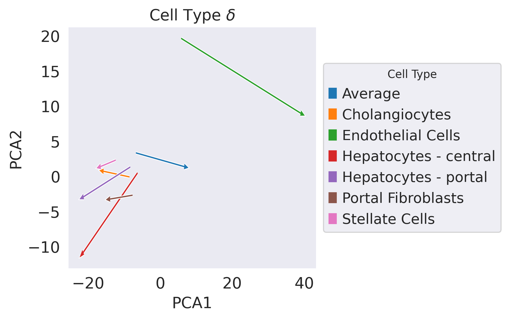
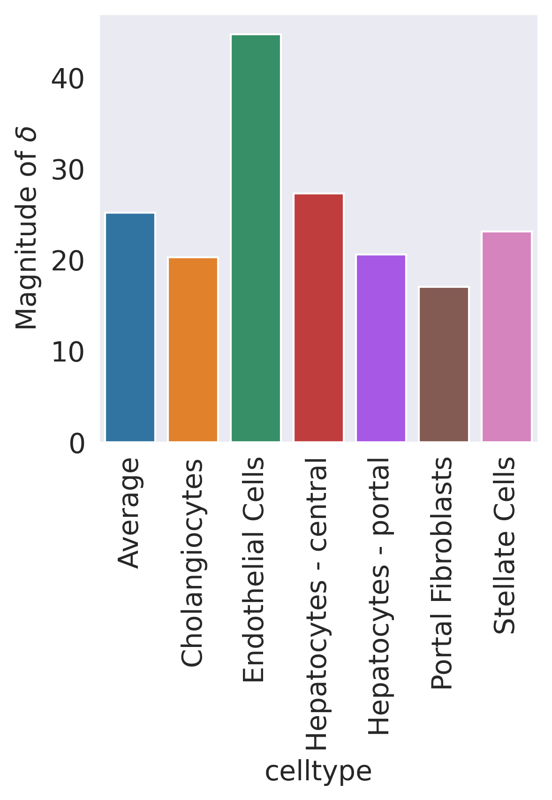
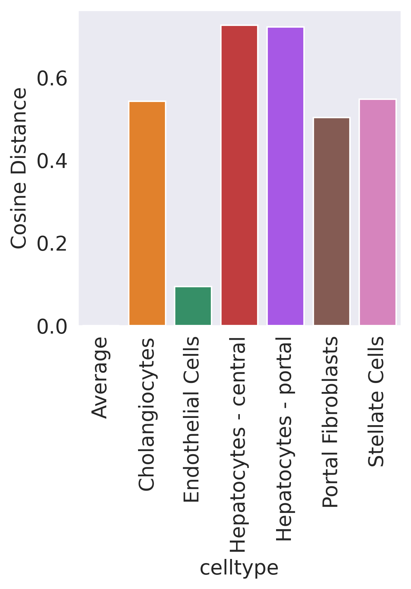

#Create Access to my code
import sys
sys.path.insert(1, '../vidr/')
#Import hte vaedr functions we have created
from vidr import VIDR
from utils import *
#Import important modules
import scanpy as sc
import scgen as scg
import pandas as pd
import numpy as np
import torch
import seaborn as sns
from scipy import stats
from scipy import linalg
from scipy import spatial
from anndata import AnnData
from scipy import sparse
from statannotations.Annotator import Annotator
from matplotlib import pyplot as plt
from matplotlib import cm
import scvi
sc.set_figure_params(dpi = 150)
sns.set_style("dark")
/mnt/home/kanaomar/miniconda3/lib/python3.9/site-packages/numba/np/ufunc/parallel.py:365: NumbaWarning: [1mThe TBB threading layer requires TBB version 2019.5 or later i.e., TBB_INTERFACE_VERSION >= 11005. Found TBB_INTERFACE_VERSION = 6103. The TBB threading layer is disabled.[0m
warnings.warn(problem)
OMP: Info #273: omp_set_nested routine deprecated, please use omp_set_max_active_levels instead.
#Prepare Data Set
adata = sc.read_h5ad("../data/nault2021_singleDose.h5ad")
cell_types_of_int = ["Hepatocytes - portal", "Hepatocytes - central", "Cholangiocytes", "Stellate Cells", "Portal Fibroblasts", "Endothelial Cells"]
adata = adata[adata.obs['celltype'].isin(cell_types_of_int)]
adata.obs["dose"] = [str(i) for i in adata.obs["Dose"]]
sc.pp.normalize_total(adata)
sc.pp.log1p(adata)
sc.pp.highly_variable_genes(adata, n_top_genes=5000)
adata = adata[:,adata.var.highly_variable]
Trying to set attribute `.obs` of view, copying.
#Training model
cell = "Hepatocytes - portal"
train_adata, test_adata = prepare_data(adata, "celltype", "dose", cell, "30", normalized = True)
train_adata.obs["cell_dose"] = [f"{j}_{str(i)}" for (i,j) in zip(train_adata.obs["Dose"], train_adata.obs["celltype"])]
model = VIDR(train_adata, linear_decoder = False)
# model.train(
# max_epochs=100,
# batch_size=128,
# early_stopping=True,
# early_stopping_patience=25)
# model.save(f"../../data/VAE_Binary_Prediction_Dioxin_5000g_{cell}.pt")
vae = model.load(f"../../data/VAE_Binary_Prediction_Dioxin_5000g_{cell}.pt/", train_adata)
[34mINFO [0m Using batches from adata.obs[1m[[0m[32m"dose"[0m[1m][0m
[34mINFO [0m Using labels from adata.obs[1m[[0m[32m"celltype"[0m[1m][0m
[34mINFO [0m Using data from adata.X
[34mINFO [0m Computing library size prior per batch
[34mINFO [0m Successfully registered anndata object containing [1;36m17791[0m cells, [1;36m5000[0m vars, [1;36m2[0m batches,
[1;36m6[0m labels, and [1;36m0[0m proteins. Also registered [1;36m0[0m extra categorical covariates and [1;36m0[0m extra
continuous covariates.
[34mINFO [0m Please do not further modify adata until model is trained.
None
[34mINFO [0m Using data from adata.X
[34mINFO [0m Computing library size prior per batch
/mnt/home/kanaomar/miniconda3/lib/python3.9/site-packages/scvi/model/base/_base_model.py:147: UserWarning: Make sure the registered X field in anndata contains unnormalized count data.
warnings.warn(
[34mINFO [0m Registered keys:[1m[[0m[32m'X'[0m, [32m'batch_indices'[0m, [32m'local_l_mean'[0m, [32m'local_l_var'[0m, [32m'labels'[0m[1m][0m
[34mINFO [0m Successfully registered anndata object containing [1;36m17791[0m cells, [1;36m5000[0m vars, [1;36m2[0m batches,
[1;36m6[0m labels, and [1;36m0[0m proteins. Also registered [1;36m0[0m extra categorical covariates and [1;36m0[0m extra
continuous covariates.
None
/mnt/home/kanaomar/miniconda3/lib/python3.9/site-packages/scvi/model/base/_base_model.py:147: UserWarning: Make sure the registered X field in anndata contains unnormalized count data.
warnings.warn(
#UMAP Projection of latent space
latent_X = vae.get_latent_representation(adata)
latent_adata = sc.AnnData(X=latent_X, obs=adata.obs.copy())
cell_dose = [f"{j}_{str(i)}" for (i,j) in zip(adata.obs["Dose"], adata.obs["celltype"])]
training = ["Train" if i != cell+"_30" else "Test" for i in cell_dose]
latent_adata.obs["Cell_Dose"] = cell_dose
latent_adata.obs["Training Split"] = training
[34mINFO [0m Received view of anndata, making copy.
[34mINFO [0m Input adata not setup with scvi. attempting to transfer anndata setup
[34mINFO [0m Using data from adata.X
[34mINFO [0m Computing library size prior per batch
[34mINFO [0m Registered keys:[1m[[0m[32m'X'[0m, [32m'batch_indices'[0m, [32m'local_l_mean'[0m, [32m'local_l_var'[0m, [32m'labels'[0m[1m][0m
[34mINFO [0m Successfully registered anndata object containing [1;36m18865[0m cells, [1;36m5000[0m vars, [1;36m2[0m batches,
[1;36m6[0m labels, and [1;36m0[0m proteins. Also registered [1;36m0[0m extra categorical covariates and [1;36m0[0m extra
continuous covariates.
/mnt/home/kanaomar/miniconda3/lib/python3.9/site-packages/scvi/model/base/_base_model.py:147: UserWarning: Make sure the registered X field in anndata contains unnormalized count data.
warnings.warn(
from umap import UMAP
from sklearn.decomposition import PCA
delta_dict = {"celltype":[], "pca_coords":[], "pca_delta":[],"delta":[],
"angle":[], "magnitude":[]}
ct_labels = adata.obs["celltype"]
dose_labels = adata.obs["Dose"]
ct = "Average"
ct_ctrl = latent_adata[(dose_labels == 0)]
ct_treat = latent_adata[(dose_labels == 30)]
ctrl_mean = np.average(ct_ctrl.X, axis = 0)
treat_mean = np.average(ct_treat.X, axis = 0)
delta = treat_mean - ctrl_mean
avg_delta = delta
delta_dict["celltype"].append(ct)
# delta_dict["umap_coords"].append(ct_ctrl.obsm["X_umap"].mean(0))
delta_dict["delta"].append(delta)
# delta_dict["umap_delta"].append(umap_model.transform([delta]).squeeze())
delta_dict["magnitude"].append(np.linalg.norm(delta))
delta_dict["angle"].append(0)
cell_types_of_int = ["Hepatocytes - portal", "Hepatocytes - central", "Cholangiocytes",
"Stellate Cells", "Portal Fibroblasts", "Endothelial Cells"]
cell_types_of_int = sorted(cell_types_of_int)
for ct in cell_types_of_int:
ct_ctrl = latent_adata[((ct_labels == ct) & (dose_labels == 0))]
ct_treat = latent_adata[((ct_labels == ct) & (dose_labels == 30))]
ctrl_mean = np.average(ct_ctrl.X, axis = 0)
treat_mean = np.average(ct_treat.X, axis = 0)
delta = treat_mean - ctrl_mean
delta_dict["celltype"].append(ct)
# delta_dict["umap_coords"].append(ct_ctrl.obsm["X_umap"].mean(0))
# delta_dict["umap_delta"].append(umap_model.transform([delta]).squeeze())
delta_dict["magnitude"].append(np.linalg.norm(delta))
delta_dict["delta"].append(delta)
delta_dict["angle"].append(spatial.distance.cosine(avg_delta, delta))
all_data = np.concatenate([latent_X, np.array(delta_dict["delta"])])
pca_model = PCA(n_components=2).fit(all_data)
X_pca = pca_model.transform(latent_X)
delta_pca = pca_model.transform(np.array(delta_dict["delta"]))
latent_adata.obsm["X_pca"] = X_pca
ct_ctrl = latent_adata[(dose_labels == 0)]
ct_treat = latent_adata[(dose_labels == 30)]
delta_dict["pca_coords"].append(ct_ctrl.obsm["X_pca"].mean(0))
for ct in cell_types_of_int:
ct_ctrl = latent_adata[((ct_labels == ct) & (dose_labels == 0))]
ct_treat = latent_adata[((ct_labels == ct) & (dose_labels == 30))]
delta_dict["pca_coords"].append(ct_ctrl.obsm["X_pca"].mean(0))
delta_dict["pca_delta"] = [i.squeeze() for i in delta_pca]
delta_dict["pca_delta"]
[array([13.414213 , -1.9513074], dtype=float32),
array([-7.2149463, 0.8025388], dtype=float32),
array([ 33.189255, -10.649511], dtype=float32),
array([-15.064152, -11.30965 ], dtype=float32),
array([-12.964495 , -4.2303033], dtype=float32),
array([-6.2385263, -0.5436661], dtype=float32),
array([-4.191285 , -0.9070153], dtype=float32)]
Supplemental Figure 2A¶
fig = plt.figure(dpi = 150)
x,y = zip(*delta_dict["pca_coords"])
dx, dy = zip(*delta_dict["pca_delta"])
for i in range(len(x)):
if i == 0:
plt.arrow(x[i],y[i],dx[i],dy[i], color = "white", width = 0.25, head_width = 0.75, )
plt.arrow(x[i],y[i],dx[i],dy[i], color = cm.tab10.colors[i], width = 0.03, head_width = 0.5, label = delta_dict["celltype"][i])
else:
plt.arrow(x[i],y[i],dx[i],dy[i], color = "white", width = 0.25, head_width = 0.75)
plt.arrow(x[i],y[i],dx[i],dy[i], color = cm.tab10.colors[i], width = 0.03, head_width = 0.5, label = delta_dict["celltype"][i])
plt.title("Cell Type $\delta$")
plt.xlabel("PCA1")
plt.ylabel("PCA2")
plt.legend(title='Cell Type',title_fontsize=10,loc='center left', bbox_to_anchor=(1, 0.5))
plt.show()
plt.savefig("../figures/SF2A.svg", bbox_inches="tight")

<Figure size 600x600 with 0 Axes>
Supplemental Figure 2B¶
delta_df = pd.DataFrame(delta_dict)
sns.barplot(x = "celltype", y = "magnitude", data = delta_df)
plt.xticks(rotation = 90)
plt.ylabel(r"Magnitude of $\delta$")
plt.savefig("../figures/SF2B1.svg", bbox_inches="tight")

delta_df = pd.DataFrame(delta_dict)
sns.barplot(x = "celltype", y = "angle", data = delta_df)
plt.xticks(rotation = 90)
plt.ylabel(r"Cosine Distance")
plt.savefig("../figures/SF2B2.svg", bbox_inches="tight")

delat